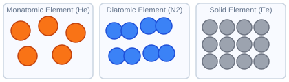

Elements

One atom type only. Identical atoms can appear alone or bonded to identical atoms.
This page helps you learn the difference between elements, compounds, and mixtures. You’ll sort matter the way chemists do, read particle diagrams and formulas more carefully, connect back to Unit 01 measurement and lab thinking, and get ready for atomic structure.
What you'll learn
Matter is anything that has mass and takes up space (volume). If you can weigh it or it takes up room, it is matter.
The main job in this unit is classification. Instead of guessing, you want a simple path: first decide whether the sample is a pure substance or a mixture.
Pure substances have a fixed composition. Elements contain one type of atom, while compounds contain different atoms chemically bonded in a set ratio. Mixtures contain more than one substance without chemical bonding. Homogeneous mixtures look uniform throughout, while heterogeneous mixtures have visibly different parts or regions.
A pure substance has only one type of particle. Every sample of it has the same composition and the same properties.
Chemists use formulas to show what a substance is made of. Read carefully — this is where most mix-ups between compounds and mixtures happen.
Capital letters start each element symbol. Symbols are 1 or 2 letters. The first is always capitalized: Na (sodium), Fe (iron), C (carbon).
Subscript numbers show atom count. H2O = 2 hydrogen + 1 oxygen. H2O2 = 2 hydrogen + 2 oxygen. No subscript means exactly 1.
Diatomic elements exist as bonded pairs. H2, O2, N2, F2, Cl2, Br2, I2 are all elements — every atom is the same type, just bonded.
State symbols go in parentheses. (s) = solid, (l) = liquid, (g) = gas, (aq) = dissolved in water.
Fe2O3 (s) = iron(III) oxide, solid state. Two iron atoms and three oxygen atoms chemically bonded → compound.
A mixture is what you get when two or more substances are physically combined without bonding.
Alloys are a common trap — they look like a pure metal but they are not. The table below shows four alloys by component and use. All are homogeneous mixtures, not pure elements.
| Alloy | Components | Common Use |
|---|---|---|
| Brass | Cu+Zn | Musical instruments, plumbing |
| Bronze | Cu+Sn | Statues, bearings, coins |
| Steel | Fe+C | Construction, tools |
| 14k Gold | Au+other metals (about 58% Au) | Jewelry |
Use this when you get stuck on a classification question. Study the "Why?" column — that is the reasoning the test expects you to show.
| Substance | Formula | Classification | Why? |
|---|---|---|---|
| Gold | Au | Element | One type of atom |
| Oxygen gas | O2 | Element | Only oxygen atoms (diatomic) |
| Water | H2O | Compound | H and O chemically bonded |
| Table salt | NaCl | Compound | Na and Cl chemically bonded |
| Sugar | C12H22O11 | Compound | C, H, O chemically bonded |
| Salt water | NaCl+H2O | Homogeneous Mixture | Uniform; NaCl dissolved in water |
| Air | N2+O2+... | Homogeneous Mixture | Gases evenly mixed |
| Sand on a beach | - | Heterogeneous Mixture | Can see different parts |
| Orange juice (pulp) | - | Heterogeneous Mixture | Pulp visible; not uniform |
Every substance has properties that help identify it. Start with this split: can you observe it without creating a new substance, or does it describe how the substance reacts to form something new?
Start with one question: Did a new substance form? If yes, the change is chemical. If no, the change is physical.
Here are the clues you'll see on tests and in labs. Notice which ones are strong clues and which are only hints — that third column is the one worth studying.
| Sign of Chemical Change | Example | What It Tells You |
|---|---|---|
| Color change | Copper turning green (patina) | A clue that often supports new-substance formation |
| Gas produced (bubbles) | Baking soda + vinegar fizzing | A strong clue when the gas comes from a reaction |
| Temperature change (no heating) | CaCl2+water gets hot | A clue that energy changed during a process |
| Light produced | A burning match | A clue that a reaction released energy |
| Precipitate forms | Two solutions form a solid | A strong clue that a new substance formed |
| Irreversibility | Fried egg won't un-fry | A clue only; the main test is still new-substance formation |
Common trap: dissolving sugar in water
Mixtures can be separated by physical methods. The method you choose depends on which physical property differs between the components.
| Method | How It Works | Best For |
|---|---|---|
| Filtration | Filter catches large solids; liquid passes through | Solid + liquid (heterogeneous) |
| Evaporation | Heat drives off liquid; solid left behind | Dissolved solid in liquid |
| Distillation | Differences in boiling points separate liquids | Two liquids with different bp |
| Chromatography | Components move at different speeds through a material | Identifying pigments / inks |
| Magnetism | Magnet pulls out magnetic material | Iron in a mixture |
| Centrifugation | Spinning separates by density | Particles suspended in liquid |
Best way to lock in Unit 02
Once the Unit 02 Practice page feels manageable, use the full practice hub for more reps and pair this unit with The Flashcard Method That Works if element, compound, and mixture vocabulary still blurs together.